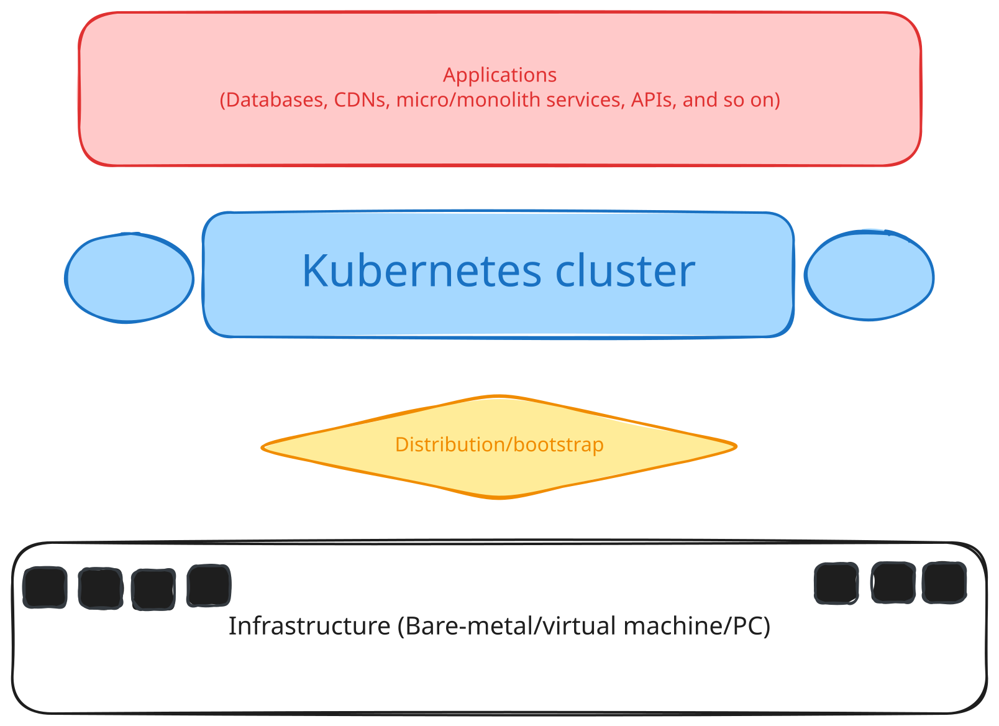

Kubernetes distribution and tools
The following gives us a Kubernetes cluster though they differ in architecture, resource requirements, operational and installation complexity, and intention to use. The following article composes of two sections former, distributions introduces the available Kubernetes distributions. Latter, however, relates to those tools that help to deploy a Kubernetes cluster.
Kubernetes clusters can be deployed using different methods. Each method uses a different techniques to provision control-plane, configure worker-nodes, and managing a variety of Kubernetes components.
| Component | Requirement | Purpose |
|---|---|---|
Platform |
Operating system |
Usually Linux |
Compute resources |
control-plane and worker-nodes |
|
Container runtime |
Plugins implement CRI; such as containerd or CRI-O |
|
kubelet |
Node-level Kubernetes agent |
|
kubeadm |
Bootstrap cluster |
|
Administration |
kubectl |
Command-line application to communicate to APIServer |
Plugins |
CNI |
Pod-to-pod network communication |
CSI |
Persistent volumes |
|
Service |
Load balancer |
Expose services to outside world |
The most feasible method to become a dangerous Kubernetes administrator should start with minikube, next kubeadm, then kubespray, and finally moves to a managed cluster like GKE.
|
The provided path is just a suggestion and alternatives of each tool can be used. Firstly, we need to understand what the Kubernetes is which the suitable solution is a local cluster. After, we learned about the resources on Kubernetes now is the time to learn about Kubernetes internals where Kubeadm shines. Next, we need to move managing our Kubernetes clusters using automation tools such as Kubespray. Finally, we can move to a managed cluster.
- Several important distinctions
-
-
Installation method: how could we manage to install the Kubernetes? Using automated tools or using a distribution bundles to a binary or just manually installed it.
-
Deployment environment is where our cluster is deployed on bare-metals, virtual machines or even containers.
-
Cluster architecture can be a single-node, multi-node and finally highly available cluster.
-
Operational ownership is divided into self-managed, partially-managed, fully-managed.
-
Provisioning mechanism can be done via scripts, Ansible, Terraform, operators, or CloudAPIs.
-
In other words,
- Kubernetes cluster deployment can be done in
-
-
Manual
-
Binary installation
-
Certificate configuration
-
Static Pod configuration
-
Component-by-component setup
-
-
Bootstrap-based
-
Kubeadm
-
Kubelet bootstrap
-
Join-token workflow
-
-
Configuration management
-
Kubespray
-
Ansible
-
Terraform or Ansible
-
-
Distribution-based
-
k3s
-
RKE2
-
MicroK8s
-
OpenShift
-
-
Local/container-based
-
Minikube
-
kind
-
k3d
-
-
Managed/cloud-based
-
Amazon EKS
-
Azure AKS
-
Google GKE
-
-

At the very first layer of our infrastructure the hardware residues. It can be bare-metal servers (like HP DL580 G12) or our own laptop. On top of that we could use a bootstrap mechanism Kubespray or Kubeadm to deploy a Kubernetes distribution. Several vendors have developed a Kubernetes cluster, some package it into a binary like k3s and others require a tool to bootstrap a cluster such as A. The next layer is Kubernetes cluster that the entire cluster including api-server, scheduler, kubelet, CRI, CNI, and CSI but not limited live. Finally, we have our last layer (a service layer) where our customers (or our own application) benefits our Kubernetes cluster.
| Tool | Solution type | Distribution | Main purpose |
|---|---|---|---|
[kubeadm] |
Bootstrap |
Set up a standard Kubernetes cluster |
Upstream Kubernetes |
[Kubespray] |
Bootstrap |
Deploy and configure Kubernetes across machines |
Upstream Kubernetes |
[kOps] |
Bootstrap |
Provision and manage Kubernetes clusters, especially in supported clouds |
Upstream Kubernetes |
[Cluster API (CAPI)] |
Bootstrap |
Manage provisioning, upgrades, and operations for multiple clusters |
Upstream Kubernetes |
[RKE2] |
Distribution |
Provide a hardened, production-oriented Kubernetes setup |
Kubernetes distribution |
[K3s] |
Distribution |
Run Kubernetes with a small operational and resource footprint |
Kubernetes distribution |
[MicroK8s] |
Distribution |
Provide an easy-to-install, modular Kubernetes environment |
Kubernetes distribution |
[kind] |
Bootstrap |
Run Kubernetes nodes as containers, mainly for development and testing |
Upstream Kubernetes |
[Minikube] |
Bootstrap |
Create local clusters for development and learning |
Upstream Kubernetes |
[k0s] |
Distribution |
Deploy a compact, self-contained Kubernetes cluster |
Certified upstream Kubernetes distribution |
[Docker Desktop Kubernetes] |
Bootstrap |
Run Kubernetes locally alongside Docker for development and testing |
Kubernetes provisioned with |
[Talos Linux] |
Bootstrap |
Run Kubernetes on a minimal, immutable, API-managed OS |
Kubernetes managed by Talos |
| Tool | Deployment approach | Supported platforms | Multi-node support |
|---|---|---|---|
[kubeadm] |
Manual; works with your own provisioning/configuration tools |
Bare metal, VMs, cloud |
Yes |
[Kubespray] |
Automated with Ansible playbooks |
Bare metal, VMs, many clouds |
Yes |
[kOps] |
Automated infrastructure provisioning and cluster lifecycle management |
Supported cloud platforms; some other environments |
Yes |
[Cluster API (CAPI)] |
Automated through providers and controllers |
Depends on the infrastructure provider |
Yes |
[RKE2] |
Installer-based; can also be managed with Rancher |
Linux servers, VMs, cloud, bare metal |
Yes |
[K3s] |
Simple installer; supports server/agent nodes |
Linux, cloud, bare metal, edge, ARM |
Yes |
[MicroK8s] |
Snap-based installation |
Linux; also available in other environments |
Yes |
[kind] |
Creates clusters in Docker containers |
Local machine or CI host with a container runtime |
Yes |
[Minikube] |
CLI; uses a VM, container, or bare-metal driver |
Linux, macOS, Windows |
Yes; multi-node supported |
[k0s] |
Single-node or multi-node; manual install or |
Linux hosts on cloud, VMs, bare metal, edge; Docker-based options |
Yes |
[Docker Desktop Kubernetes] |
Enable Kubernetes in Docker Desktop; choose a provisioning method |
Docker Desktop on macOS, Windows, or Linux |
Yes with |
[Talos Linux] |
Install Talos on nodes; configure and manage with |
Bare metal, VMs, cloud, and edge |
Yes |
| Tool | Built-in components | Customization | Resource footprint |
|---|---|---|---|
[kubeadm] |
Yes, with additional setup; kubeadm bootstraps but doesn’t provision infrastructure |
High |
Medium; depends on chosen components and node sizes |
[Kubespray] |
Yes, with suitable inventory and configuration |
High |
Medium–high |
[kOps] |
Yes, for supported platforms and configurations |
High, with cloud-specific integrations |
Medium–high |
[Cluster API (CAPI)] |
Yes, with a supported provider and production configuration |
Very high |
Medium–high; requires management-cluster resources |
[RKE2] |
Yes |
Medium–high |
Medium |
[K3s] |
Yes; HA and datastore choices matter for production |
Medium; bundled components can be disabled or replaced |
Low |
[MicroK8s] |
Yes, with appropriate HA and operational configuration |
Medium; features are enabled as add-ons |
Low–medium |
[kind] |
No; intended primarily for testing |
Medium |
Low–medium, depending on node count and workloads |
[Minikube] |
No; intended for local development and testing |
Medium; drivers, Kubernetes version, and add-ons are configurable |
Low–medium; depends on allocated resources and driver |
[k0s] |
Yes, with suitable cluster design and operations |
High; supports configurable CNI, runtime, and datastore choices |
Low; published minimum is 1 vCPU and 1 GB RAM |
[Docker Desktop Kubernetes] |
No; aimed at local development and testing |
Low–medium; options depend on provisioner |
Medium; shares resources with Docker Desktop and the local machine |
[Talos Linux] |
Yes; production-ready, with appropriate cluster architecture and operations |
High through declarative machine configuration and Kubernetes settings |
Low–medium; minimal OS, but cluster workload and sizing determine actual needs |
| Tool | Production sustainability | Complexity | Recommended use cases |
|---|---|---|---|
[kubeadm] |
Minimal; add a CNI and other cluster services |
Medium–high |
Learning, custom clusters, bare metal, as a building block |
[Kubespray] |
Networking and cluster components configurable through Ansible |
High |
Self-managed production clusters across varied infrastructure |
[kOps] |
Add-ons and cloud integrations; options vary |
Medium–high |
Cloud-first teams wanting automated cluster lifecycle management |
[Cluster API (CAPI)] |
Provider-dependent; built around Kubernetes APIs and controllers |
High |
Platform teams managing fleets of clusters |
[RKE2] |
Bundled Kubernetes services; options depend on configuration |
Medium |
Production environments seeking a managed, security-focused distribution |
[K3s] |
Container runtime, networking, DNS, ingress, local storage and other components |
Low–medium |
Edge, IoT, labs, development, and smaller production clusters |
[MicroK8s] |
Optional add-ons for common cluster services |
Low–medium |
Development, small clusters, and teams wanting add-on-based setup |
[kind] |
Minimal; additional components can be installed |
Low |
Local development, CI, and Kubernetes testing |
[Minikube] |
Core cluster services; common add-ons available |
Low |
Learning, local development, demos, CI testing |
[k0s] |
Core cluster services, including CoreDNS and Metrics Server; fewer opinionated add-ons |
Low–medium |
Lightweight production clusters, edge, IoT, labs, air-gapped setups |
[Docker Desktop Kubernetes] |
Networking and storage controllers; details depend on provisioning method |
Low |
Local app development, learning, and testing |
[Talos Linux] |
Minimal OS layer; Kubernetes components are managed as part of the platform |
Medium–high |
Production clusters where immutable infrastructure and API-based OS management are priorities |
Distributions
Managed distributions just provide a K8s cluster and allows to become ready in just a several minutes. Everything, therefore, to manage the cluster happens autonomously by a provider.
The following is a list of well-known (somehow dominated the cloud environment).
Managed
OpenShift
Red Hat is well-known in the Open-Source and Linux ecosystem. It introduced OpenShift a managed Kubernetes cluster integrated with developer tooling, security enhancements, and operational features. RedHat OpenShift can also deployed on-premise environment as well.
Google Kubernetes Engine (GKE)
Google Cloud infrastructure to manage Kubernetes cluster using Google Kubernetes Engines (GKE).
On-premise
MicroK8s
A lightweight package Kubernetes distribution maintained by Canonical.
MicroK8s packages a Kubernetes distribution into a Snap package. It therefore can be installed on the Snap supported operating systems simply.
- Some notable features
-
-
Simple installation
-
Enabling add-ons easily
-
Built-in DNS, ingress, storage, and observability options
-
Multi-node and high-available cluster
-
- Best for
-
-
Local, development and testing deployment
-
Edge deployments for small to medium-sized cluster
-
Experimenting with Kubernetes
-
K3s
A lightweight package Kubernetes distribution.
- Most notable feature
-
-
CNCF-certified distribution
-
Simple installation, deployment, lightweight, and easy to operate
-
Built-in LoadBalancer and local storage provisioner
-
Flannel as CNI
-
SQLite (replacing
etcd) as the central database and state of the truth for the cluster
-
- Best for
-
-
Embedded and IoT devices; low-power resources
-
Small-sized production cluster
-
Lightweight distribution
-
Local, testing, and development deployment
-
Experimenting Kubernetes
-
Tools
The current section describe tools to bootstrap a Kubernetes cluster using different distribution. Some use other distributions and others come with their own distribution.
Kubeadm
A bootstrapping Kubernetes cluster tool.
- Most notable feature
-
-
A tool to deploy a production-grade Kubernetes cluster
-
Generating certificates and cluster configuration
-
- Best for
-
-
Experimenting with Kubernetes internals
-
Experimenting with different components---(CRI, CNI, and CSI)
-
Building a customized cluster architecture
-
| Kubeadm doesn’t install CNI, CRI, and CSI so administrators require to choose and install components based on their interests. |
Kind
Kind runs a Kubernetes cluster inside Docker containers, mainly for testing and development (on your local machine).
Kind stands for Kubernetes IN Docker.
- Some notable features
-
-
Multi-cluster nodes
-
Simple installation and destroying a cluster
-
- Best for
-
-
Local, development and testing deployment
-
Experimenting with Kubernetes
-
CI/CD pipeline, Helm, or Kubernetes Operator development and testing
-